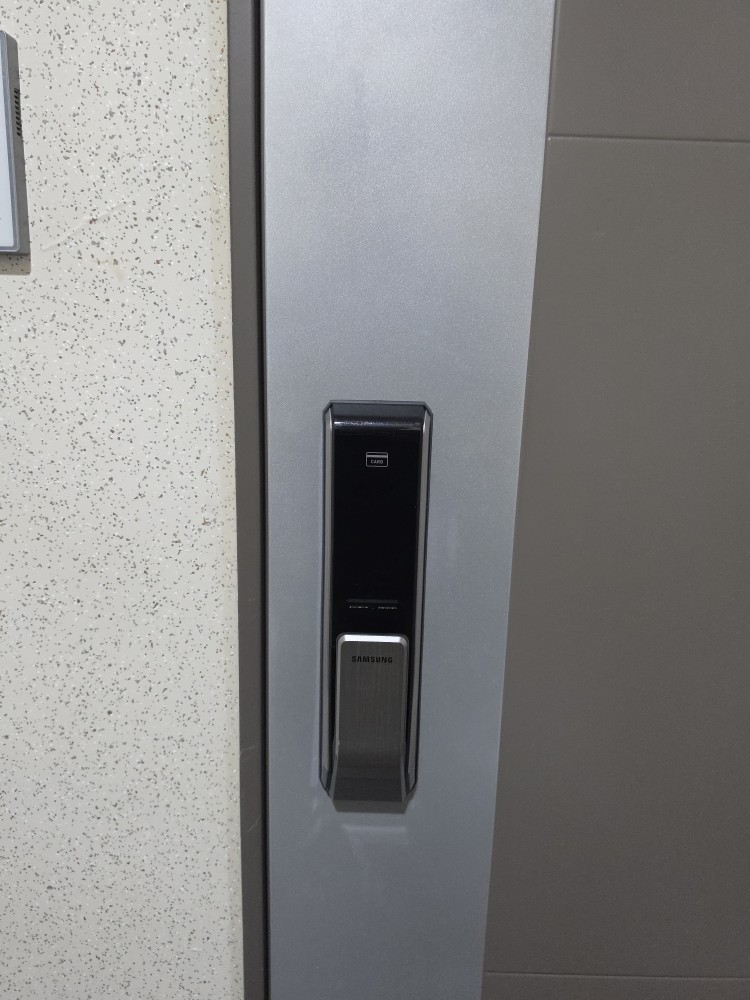
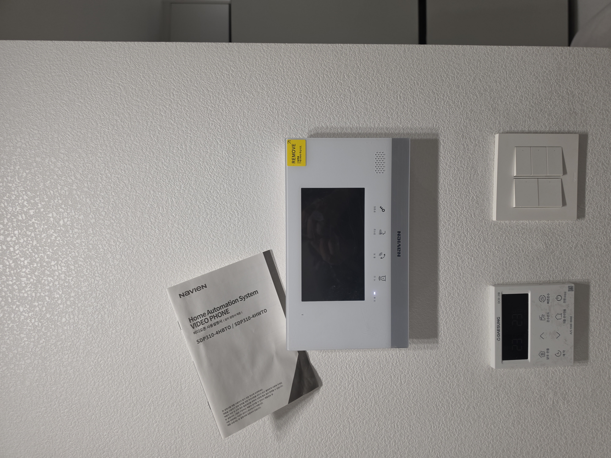

STEP 01 · 배선 및 통화선 점검
가야써니빌 기존 배선 판독 및 안전 철거
노후로 화면이 나오지 않거나 수화기 잡음이 심한 구형 비디오폰을 안전하게 탈거한 뒤, 1층 공동현관 로비폰과 연결되는 통화·영상·문열림 제어 배선의 신호 상태를 테스터기로 정밀 확인합니다.
가야써니빌 세대 내 구형 비디오폰 화면 불량·통화 잡음·먹통 증상부터 1층 공동현관 로비폰 문열림 불량까지! 가야써니빌 배선 구조에 딱 맞는 호환 기종 매칭과 전용 마감판 깔끔 시공, 그리고 거실 비디오폰에서 현관문까지 여는 도어락 무선 문열림 연동을 당일 출장으로 해결해 드립니다.

시공 전 · 가야써니빌 노후 인터폰
시공 후 · 전용 마감판 & 문열림 연동 완료면목동·망우동·상봉동 가야써니빌 현장의 배선 점검부터 최종 작동 테스트까지 꼼꼼하게 진행합니다.
노후로 화면이 나오지 않거나 수화기 잡음이 심한 구형 비디오폰을 안전하게 탈거한 뒤, 1층 공동현관 로비폰과 연결되는 통화·영상·문열림 제어 배선의 신호 상태를 테스터기로 정밀 확인합니다.
가야써니빌 기존 매립함 사이즈에 맞춘 전용 마감판을 수평에 맞춰 단단히 고정하고, 단지 시스템과 100% 호환되는 신형 비디오폰 및 현관 초인종 카메라를 깔끔하게 설치합니다.
 STEP 03 · 로비폰·도어락 동시 연동
STEP 03 · 로비폰·도어락 동시 연동
거실 비디오폰에서 1층 공동현관 방문자 확인 및 문열림 작동은 물론, 무선 송·수신기 모듈을 추가 매칭하여 거실 버튼 하나로 현관 도어락까지 바로 열리도록 연동 완료합니다.
전체 교체가 꼭 필요한 경우와 부분 수리로 해결 가능한 경우를 정직하게 진단합니다.
| 출장 대상 단지 | 가야써니빌 전 세대 (면목동 · 망우동 · 상봉동 인접 권역 당일 출장) |
|---|---|
| 주요 시공 항목 | 구형 비디오폰 신형 교체 / 1층 공동현관 로비폰 연동 / 현관 도어락 무선 문열림 연동 / 비디오폰·도어락 부분 수리 AS |
| 벽면 마감 방식 | 구형 매립 박스 타공 흔적 노출 없는 가야써니빌 맞춤 규격 전용 마감판 적용 |
| 소요 시간 및 A/S | 비디오폰 단독 교체 약 40~50분 / 도어락 문열림 동시 연동 약 1시간 내외 (설치 후 무상 A/S 보증) |
아래 5가지 항목을 적어 보내주시면 확인 후 출장비 포함 확정 견적을 바로 안내해 드립니다.
네, 가능합니다. 가야써니빌 단지 배선 방식과 통신 신호에 호환되는 전용 신형 비디오폰으로 교체하여 세대 통화, 현관 카메라 영상 확인, 1층 공동현관 로비폰 문열림까지 모두 정상 연동해 드립니다.
네, 사용 중이신 디지털 도어락이 무선 연동 모듈을 지원하는 모델(삼성·직방·게이트맨·솔리티 등 대부분 지원)이라면 도어락을 새로 바꾸지 않고 연동 모듈만 추가해 거실 비디오폰에서 현관문을 여실 수 있습니다.
네, 점검 후 배선 단선이나 스위치 접촉 불량 등 부분 수리로 해결 가능한 경우 불필요한 전체 교체를 권하지 않고 합리적인 비용으로 수리해 드립니다.